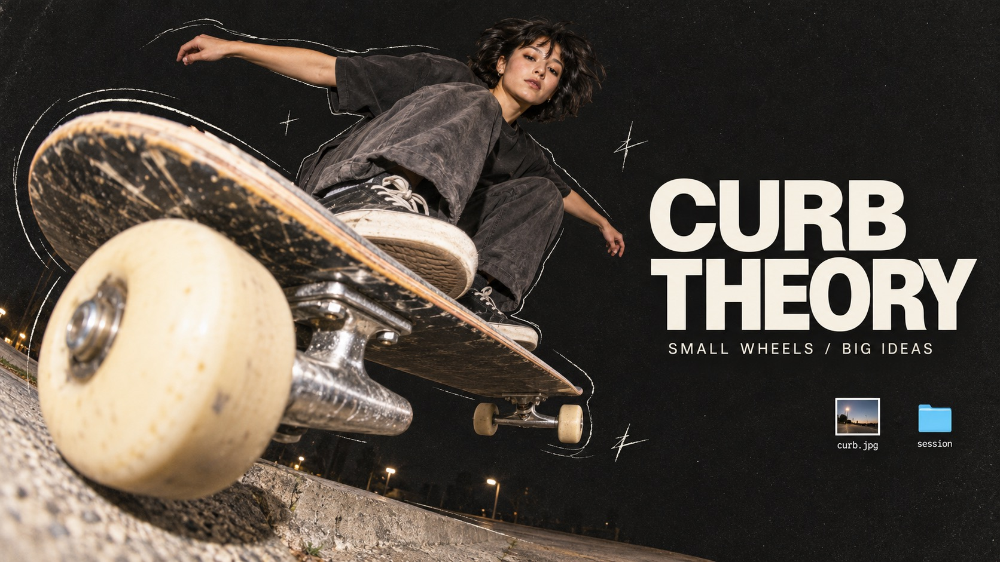
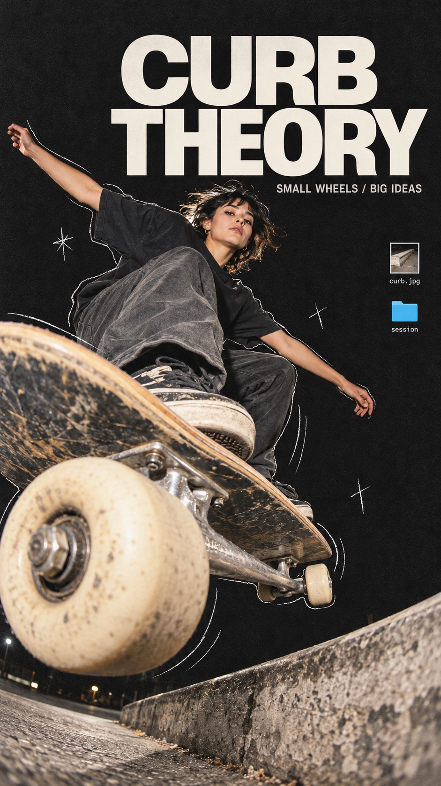
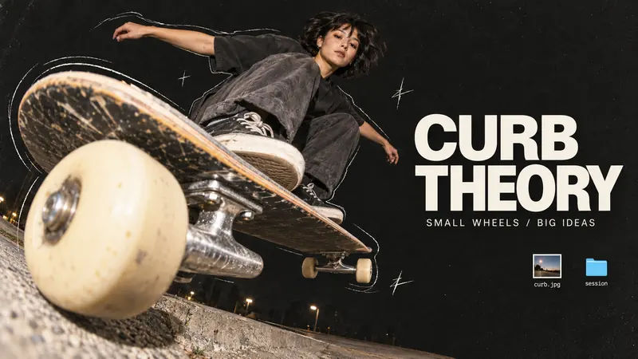
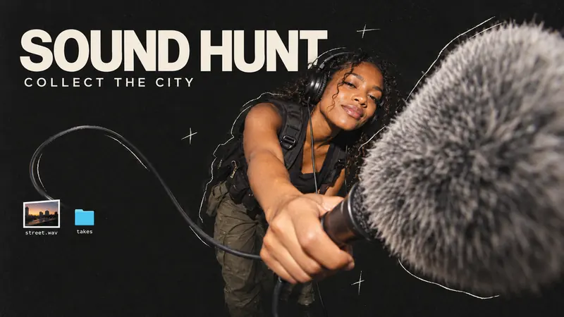
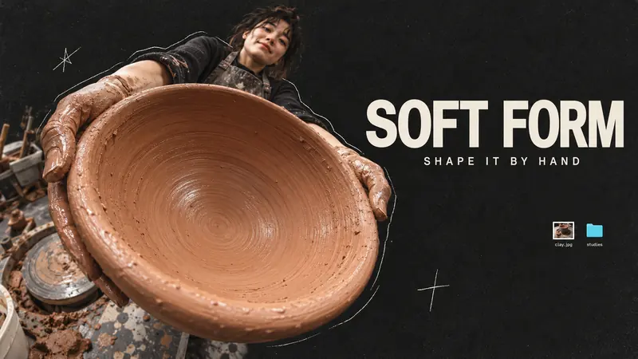
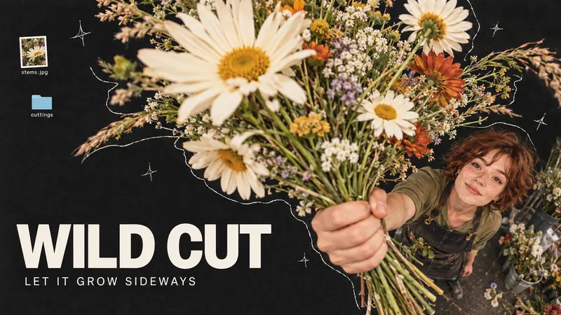

Zine + Collage · AI image style prompt
Fisheye Desktop Zine
Tactile digital scrapbook: extreme fisheye cutout photos, charcoal grain, loose pencil outlines, clean off-white editorial type and tiny cyan desktop-file fragments.


4 example cases
Same style.json, different subjects. Each case's values are in the examples section of the JSON.




What this style does
A tactile digital scrapbook that collides extreme fisheye cutout photography, charcoal grain, imperfect pencil outlines, off-white editorial type and tiny cyan desktop-file fragments.
Signature traits
- Extreme near-to-far photographic perspective: one tactile foreground form enlarged by a fisheye lens, with a human gesture or body receding strongly behind it. Maintain coherent anatomy and physical object structure.
- A predominantly charcoal-black field with low-contrast fine grain and generous breathing space contrasts with warm, flash-lit photographic cutouts and large off-white sans-serif typography.
- Thin imperfect off-white pencil contour echoes loosely trace selected cutout edges; a few scratch stars or crosses punctuate space without becoming a dense illustration.
- Small generic cyan-blue desktop folders and white-bordered photo-file thumbnails float as collage punctuation; no actual operating-system interface, platform branding, or logos.
- Let each subject determine its visual path: diagonal leap, lateral sweep, circular rim, or radiating organic silhouette; avoid repeating a single person-right/title-left template.
- Headline may stack, stretch across an open band, or split into clearly ordered blocks; preserve exact wording and strong photographic/typographic hierarchy.
style.json
{
"schema_version": "2.2",
"style_version": "1.0.0",
"style_name": "Fisheye Desktop Zine",
"style_slug": "fisheye-desktop-zine",
"style_summary": "A tactile digital scrapbook that collides extreme fisheye cutout photography, charcoal grain, imperfect pencil outlines, off-white editorial type and tiny cyan desktop-file fragments.",
"category": "Zine + Collage",
"environment_variables": {
"ASPECT_RATIO": "9:16 or 16:9",
"STYLE_FIDELITY_ANCHORS": "Prioritized visual identity and flexible design choices",
"SOURCE_CONTENT_TO_AVOID": "Original source content excluded from reuse",
"SUBJECT": "New subject and styling",
"ACTION_AND_OBJECT": "Physically coherent gesture and strongly foreshortened object",
"DESIGN_INTENT": "Case concept and separately planned ratio compositions",
"MAIN_TEXT": "Exact uppercase headline",
"SECONDARY_TEXT": "Exact short supporting line",
"FILE_LABELS": "Two exact labels, separated by semicolon, assigned to one thumbnail and folder"
},
"style_fidelity_anchors": [
"[CORE] Extreme near-to-far photographic perspective: one tactile foreground form enlarged by a fisheye lens, with a human gesture or body receding strongly behind it. Maintain coherent anatomy and physical object structure.",
"[CORE] A predominantly charcoal-black field with low-contrast fine grain and generous breathing space contrasts with warm, flash-lit photographic cutouts and large off-white sans-serif typography.",
"[CORE] Thin imperfect off-white pencil contour echoes loosely trace selected cutout edges; a few scratch stars or crosses punctuate space without becoming a dense illustration.",
"[CORE] Small generic cyan-blue desktop folders and white-bordered photo-file thumbnails float as collage punctuation; no actual operating-system interface, platform branding, or logos.",
"[FLEX] Let each subject determine its visual path: diagonal leap, lateral sweep, circular rim, or radiating organic silhouette; avoid repeating a single person-right/title-left template.",
"[FLEX] Headline may stack, stretch across an open band, or split into clearly ordered blocks; preserve exact wording and strong photographic/typographic hierarchy.",
"[FLEX] Change viewpoint, cutout scale, negative-space shape, placement of file fragments, and restrained secondary material colors to serve the case. Cyan remains a small graphic accent.",
"[FLEX] Recompose the portrait and landscape intentionally; retain the concept and photographic gesture while moving type and supporting fragments to avoid collisions."
],
"source_content_to_avoid": [
"Original young man drinking from a blue can with open mouth",
"Source clothing, cap, face identity and hand-to-mouth action",
"RANDOM TUTORIALS wording and Telegram tutorial premise",
"Source personal photographs, filenames and creator identifiers",
"QR codes, barcode packaging, brand marks and actual platform logos"
],
"visual_deconstruction": {
"hierarchy": "The source uses an oversized warm photographic hand/can/head cluster against dark negative space, followed by a compact white headline and much smaller file fragments.",
"perspective": "Very short focal length produces spectacular near-to-far scale differences, rather than a flat cut-and-paste portrait.",
"graphics": "Scratchy offset outlines, loose stars and crosses, and generic desktop folders suggest a personal working archive.",
"scope": "Creative reinterpretation: preserve material and photographic grammar, replace story, subjects, compositions and interaction."
},
"composition": {
"landscape": "Use each case design intention to allocate an active image mass and a protected text area; photography may occupy 50-65 percent of the canvas.",
"portrait": "Rebuild the depth path vertically with explicit title space; do not crop the landscape.",
"spacing": "Keep key type and file labels inset at least 5 percent; secondary fragments stay subordinate."
},
"typography": {
"headline": "Large off-white uppercase neutral grotesk sans serif, medium-to-bold weight, tight purposeful spacing; line breaking follows the available shape.",
"secondary": "Small clean white sans serif, exact case wording, readable contrast.",
"microcopy": "Only the two case file labels, no invented UI text."
},
"color_palette": {
"field": "charcoal #171818 with near-black #101111",
"type_and_marks": "off-white #ECEBE5",
"file_accents": "cyan-blue #16AEE2",
"photo": "natural warm skin and object color, restrained saturation; soft-form terracotta and wild-cut cream/orange remain photographic accents"
},
"image_treatment": {
"texture": "Fine low-contrast monochrome grain across the charcoal field and lighter photographic grain on cutouts; hairline pencil scratches have uneven hand pressure. Keep text clean, preserve tactile surfaces and slight snapshot softness, no heavy distressed overlays.",
"lighting": "Directional close-camera flash with soft ambient fill, bright tactile foreground, believable volume and darker receding forms.",
"edges": "Photo cutouts follow actual silhouettes; selected loose pencil contours sit slightly outside, without thick sticker borders."
},
"design_rules": [
"A near-lens object must alter composition rather than merely accompany a portrait.",
"Preserve a deliberate open region for exact headline and secondary line.",
"Use only two or three small generic desktop fragments; the case file labels appear once each.",
"Pencil marks respond to gesture, outline or material; no full-page random scribble field.",
"Keep lens exaggeration photographic and physically credible, without limb duplication."
],
"do": [
"Make foreground and background scales visibly different.",
"Use theme-driven silhouettes and paths for a cohesive but varied set.",
"Keep all requested text exact and readable."
],
"avoid": [
"Replicating the reference drinking pose or identity.",
"Uniform layouts with only prop and headline swaps.",
"Flat vector character art, glossy 3D typography or dense interface panels."
],
"prompt_template": "Create one finished editorial collage poster, aspect ratio {ASPECT_RATIO}. Style: Fisheye Desktop Zine. Follow these prioritized anchors: {STYLE_FIDELITY_ANCHORS}\nSubject: {SUBJECT}\nAction and focal object: {ACTION_AND_OBJECT}\nDesign intention and ratio adaptation: {DESIGN_INTENT}\nRender exactly the headline \"{MAIN_TEXT}\" and smaller supporting line \"{SECONDARY_TEXT}\". Two tiny readable desktop fragment labels, each once: {FILE_LABELS}. Use two or three small generic cyan folders / white-bordered photographic file thumbnails, with no other words. Keep a predominantly charcoal field, warm tactile flash photograph, loose hairline white contour echoes and sparse scratch marks. Texture: fine low-contrast monochrome grain on the dark field, lighter grain and slight intentional snapshot softness on photographs, clean typography; no thick distress. Exclude source content: {SOURCE_CONTENT_TO_AVOID}. Build a new content-led composition within this visual family. Keep anatomy, object connections, occlusion and readable type coherent. No watermark, logo, QR code, barcode, app mark, signature, dense UI, extra fingers, extra limbs or illegible invented text.",
"negative_prompt": "Original source man and drinking can, source headline and identity, watermark, logo, QR, barcode, app branding, dense UI, extra fingers or limbs, disconnected object parts, unreadable or misspelled copy, thick white sticker border, neon background, glossy 3D letters, flat vector people, excessive grunge.",
"examples": [
{
"case_name": "curb-theory",
"values": {
"SUBJECT": "An adult woman street skater with short dark hair, in a loose washed-black T-shirt, slate trousers and unbranded worn skate shoes.",
"ACTION_AND_OBJECT": "A low fisheye camera catches an airborne board angled toward the viewer. One cream polyurethane wheel and silver truck are huge in the lower-left foreground; the coherent skateboard deck recedes toward the skater, whose crouched body is higher and further back. No logos.",
"DESIGN_INTENT": "Use the board as a diagonal slash crossing the photographic cutout boundary; pencil momentum ticks follow its actual path. In landscape put the huge wheel at lower-left, body above center-left and headline in open right space. In portrait let the board cut diagonally across the lower half, skater above it and headline occupy the open upper band. The shadow-ground fragment may curve gently below the board.",
"MAIN_TEXT": "CURB THEORY",
"SECONDARY_TEXT": "SMALL WHEELS / BIG IDEAS",
"FILE_LABELS": "curb.jpg; session"
}
},
{
"case_name": "sound-hunt",
"values": {
"SUBJECT": "An adult Black woman field recordist wearing a dark utility vest and compact unbranded headphones, leaning forward with a concentrated smile.",
"ACTION_AND_OBJECT": "She extends a handheld field microphone with a large gray furry windscreen almost into the lens; the windscreen is enlarged in the foreground and her hand, arm and torso recede convincingly behind it. A single black cable arcs loosely through space.",
"DESIGN_INTENT": "The microphone and its real cable organize a sideways sweep like captured sound. Landscape: windscreen at far right foreground, recordist center-right, headline across the upper-left opening; cable arcs below the copy toward two small file fragments. Portrait: microphone near lower foreground, recordist above and behind, title in the upper open space, a cable curve returns up one edge. Keep the mic shape separate from her face.",
"MAIN_TEXT": "SOUND HUNT",
"SECONDARY_TEXT": "COLLECT THE CITY",
"FILE_LABELS": "street.wav; takes"
}
},
{
"case_name": "soft-form",
"values": {
"SUBJECT": "An adult ceramic artist in a charcoal work apron, seen from an elevated wide-angle viewpoint; clay-coated hands are the principal human presence, face small and peripheral.",
"ACTION_AND_OBJECT": "Both hands support a very wide freshly thrown clay bowl and tilt its open mouth toward the camera. The warm terracotta rim is enormously foreshortened near the lens; visible throwing rings spiral into the bowl, with the artist and a small pottery-wheel fragment receding behind. Exactly two believable hands support opposite sides of the bowl.",
"DESIGN_INTENT": "Make the bowl opening a tactile circular visual well; thin pencil echoes follow selected rim edges, contrasting a huge circle with quiet rectangular type and tiny file icons. Landscape: bowl on the left-center and typography in the open right third. Portrait: bowl dominates the lower-middle, title occupies the upper band and the small artist recedes behind the upper rim. Do not put any text inside the bowl.",
"MAIN_TEXT": "SOFT FORM",
"SECONDARY_TEXT": "SHAPE IT BY HAND",
"FILE_LABELS": "clay.jpg; studies"
}
},
{
"case_name": "wild-cut",
"values": {
"SUBJECT": "An adult florist with short auburn hair, wearing a dark canvas apron and a muted olive shirt.",
"ACTION_AND_OBJECT": "An overhead fisheye photograph of the florist thrusting a hand-tied wildflower bouquet toward the camera. Large pale cream daisies, a few burnt-orange blooms and fine grasses fan toward the lens; the hand gripping the stems and the florist recede below. The bouquet is one coherent object with physically connected stems.",
"DESIGN_INTENT": "Use the radiating asymmetric flower silhouette to break the rectangular poster and open a wedge for the headline. Landscape: huge blooms fan across upper-right, florist recedes toward lower-right, bold text anchored low-left; tiny file fragments balance the top-left opening. Portrait: bouquet fans across the middle and upper-left while title sits in a clear lower band and the florist recedes near the lower-right of the photographic cutout. Pencil lines follow stem growth rather than generic orbit lines.",
"MAIN_TEXT": "WILD CUT",
"SECONDARY_TEXT": "LET IT GROW SIDEWAYS",
"FILE_LABELS": "stems.jpg; cuttings"
}
}
]
}